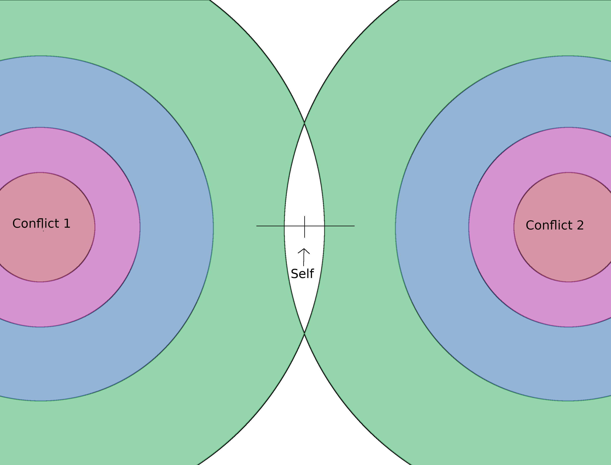

Looking Forward
Memory profile
In order to implement intellect, we will require a method of defining semi-discrete (overlapping) abstractions of finite order. One method of defining the order of an abstraction would be to define their duration implicitly, as a consequence of a particular memory or "remembrance" profile:

Creative and Optimizing
One approach to generating a learning process would involve a single process being alternatively creative (i.e., trying new things) and optimizing (i.e., discarding suboptimal solutions).
One approach to implementing the above might be to implement an optimizing function that sees the same thing in two distict lights simultaneously. Thus, each "creative" and "optimizing" would occur as a result of the same process.
Emotion
The "cost" of dereferencing abstractions; the "meaning" of belief. I think there's a connection between belief and emotion that, in part, guides the simplying process.
Stability
Stability is the resistance to change about the beliefs of the intellect; effectively, then, instability determines the volatility of the simplifying process.
Clever
A concept distinct from, though related to, intelligence, a process is clever if it looks ahead. Being clever can increase intelligence, but is not guaranteed to do so.
A problem with being clever is that, even if you are successful, you are projecting your current self into the future; you are denying yourself the ability to learn from the situation as it develops. This is fine in areas that do not change, such as mathematical calculations, chess, etc, but is not necessarily of practical value.
Conflict
A few thoughts on conflict:
First, I think that conflict is the impetus for all action. The ideal conflict/resolution scenario is, I think, like scratching an itch: The conflict is minor, and its relief rewarding. On the other hand, a poor conflict/resolution scenario might be, scratching a scab: Relieving the itch exacerbates the situation.
Second, when there are multiple, coexisting and opposing conflicts, they serve to define. The individual is effectively trapped between these conflicts; relieving one introduces greater burden from the other:
Finally, people tend to reject "bad." This has a few meaningful parts. First, that people tend to improve, select, abstract. Second, it subverts the age-old question of Are-people-good-or-bad. Third, it helps to define learning, in a simplistic fashion.
Belief
Beliefs are larger than I expected; abstractions are elementals, by comparison. I think that a theory is nothing more than a "formal" belief-- that they have the same form. In exactly the same way that a development traces a theory, I expect the intellect to trace beliefs as a "path of least implied pain." All beliefs begin with assumptions.
Beliefs guide the simplifying process, but do not determine it, per se. Obviously, we will require some mechanism for uniquely determining the simplifying process, but I cannot say honestly that I believe beliefs alone to constitute that mechanism. Whatever mechanism is developed must be smaller, more elemental, that beliefs.
Paradigm
A paradigm is larger yet than a belief; it is the circular set of beliefs that an intellect traces, if any. This, I think, will be the formal interpretation of "ego."
Note: It isn't my goal to implement, realize, or even define beliefs or paradigms, but only to understand them well enough to see that and how they could/might be realized through a particular implementation.